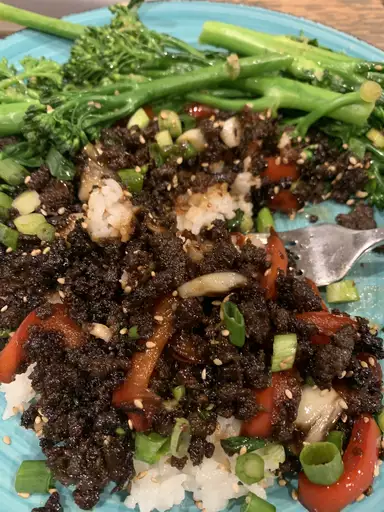

Korean Ground Beef

Description
This Korean beef bowl is quick and easy to make. The ingredients can easily be adjusted to suit your taste.
Serve over warm rice or spiralized vegetables.
Ingredients
- 1 pound lean ground beef
- 5 gloves garlic, crushed
- 1 tablespoon freshly grated ginger
- 2 teaspoons toasted sesame oil
- Half a cup reduced-sodium soy sauce
- Third of a cup light brown sugar
- Quarter teaspoon of crushed red pepper
- 6 green onions, chopped, divided
- 4 cups hot cooked brown rice
- 1 tablespoon toasted sesame seeds
Steps
- Heat a large skillet over medium-high heat. Add beef and cook etc.
- Stir in garlic, ginger, and sesame oil and cook until fragnant, about 2 minutes. Do other stuff.
- Serve over hot cooked rice; garnish with sesame seeds and remaining green onions.